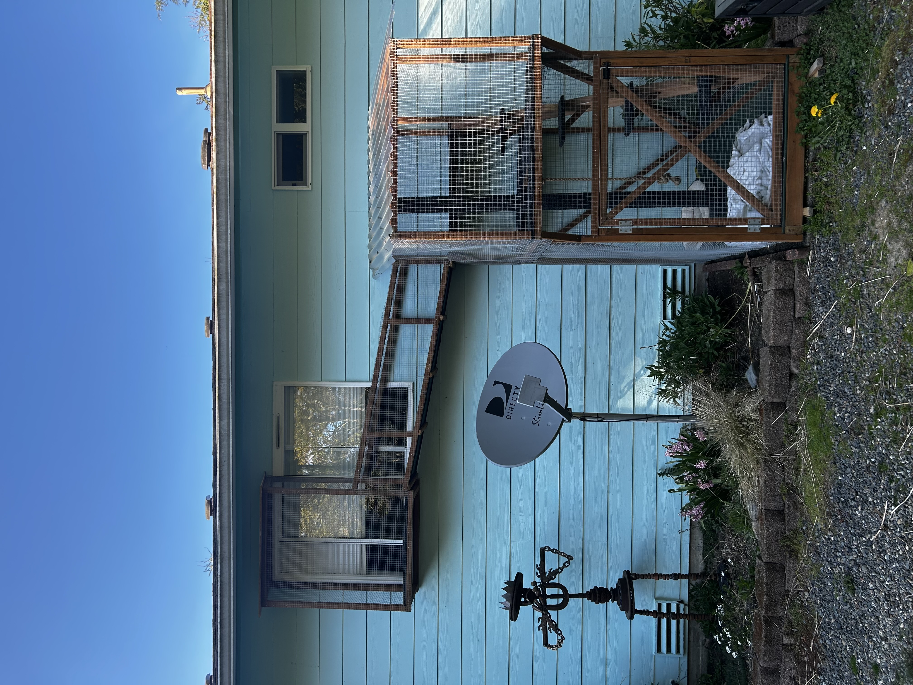
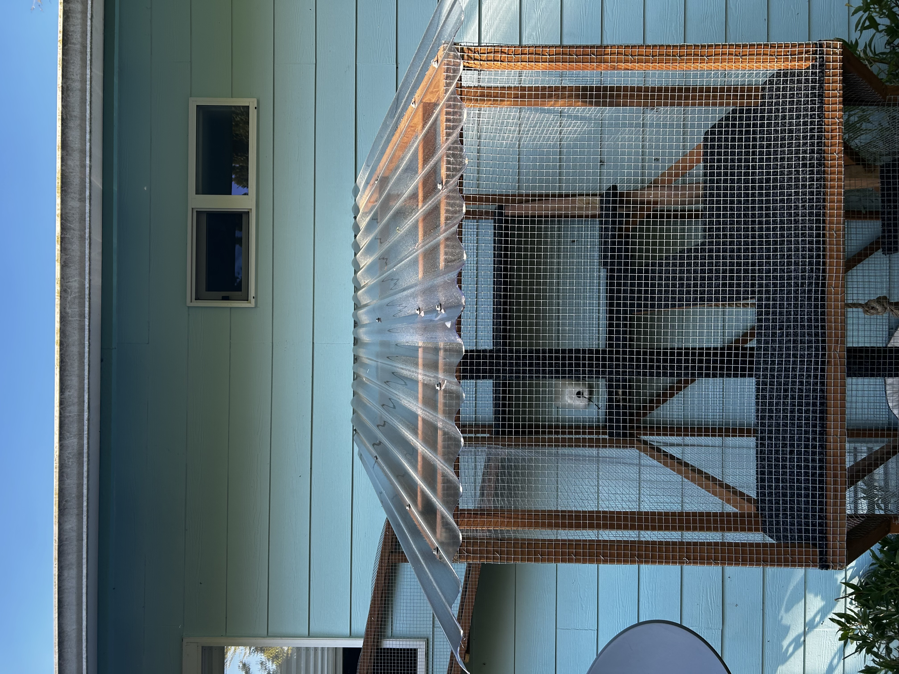
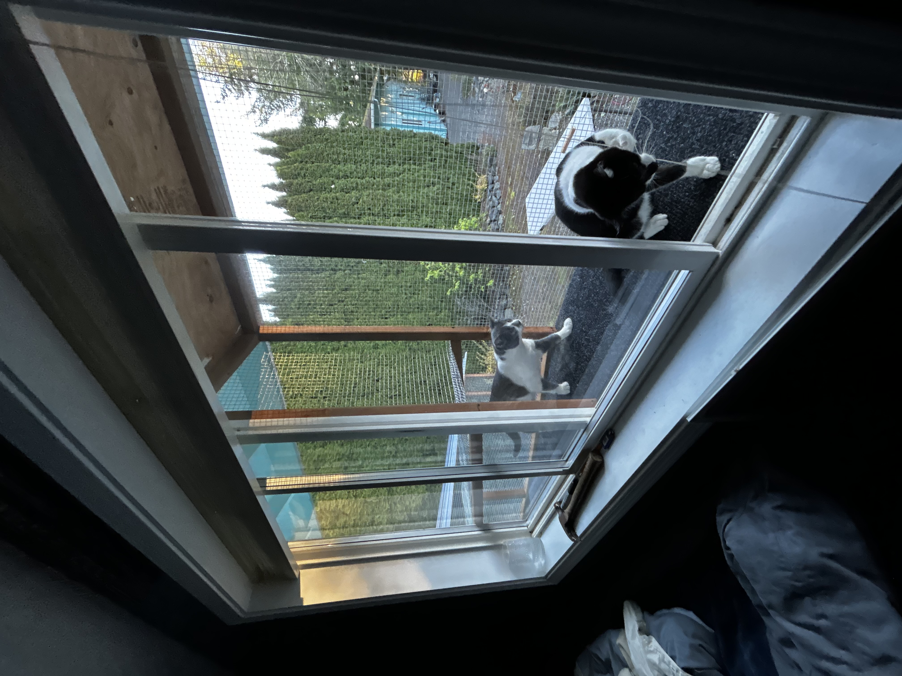

About
Gav's Cattios builds safe, beautiful outdoor enclosures so your cat can enjoy fresh air without the risks of roaming free. Every cattio is custom-built to fit your home and your cat's personality.
Family-owned and operated. We've been keeping cats happy and owners worry-free since 2019.
Services
- Window Box Cattio A compact enclosure that mounts right off your window. Perfect for apartments.
- Deck / Patio Enclosure Full enclosure built around an existing deck or patio space.
- Freestanding Catio A standalone structure in your yard, connected to the house via a tunnel.
- Custom Tunnel Run Covered tunnels connecting your home to a catio or yard area.
Our Work






Why a Cattio?
Indoor cats live longer on average — but they still need enrichment and fresh air.
A cattio gives your cat access to the outdoors safely: no cars, no predators, no disappearing for three days. And they're a lot cheaper than an emergency vet visit.
Contact
Phone: (555) 847-2291
Email: gav@gavcattios.com
Serving the greater metro area — free estimates, no obligation.